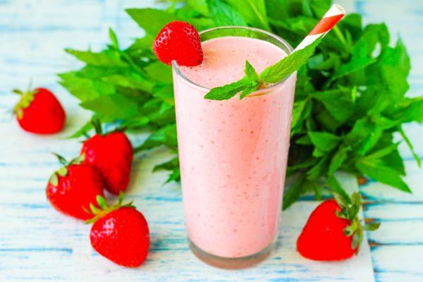
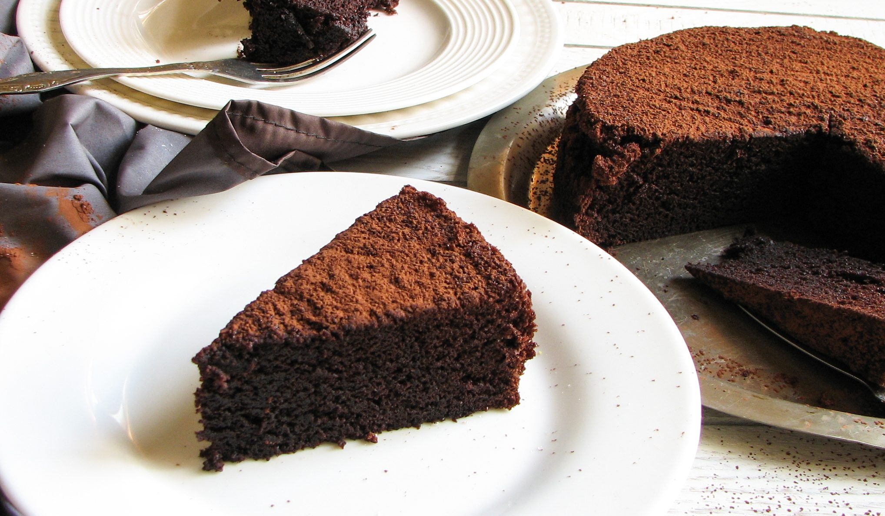

Паста Карбонара
Классическая итальянская паста с беконом, сыром и яйцом.
Итальянская Основное блюдо
Американские блины
Пушистые сладкие блины с кленовым сиропом и ягодами.
Завтрак Сладкое
Салат Цезарь
Хрустящий салат с курицей, сухариками и соусом Цезарь.
Салаты Лёгкое
Пицца Маргарита
Классическая итальянская пицца с томатами и моцареллой.
Итальянская Выпечка

Ягодный смузи-боул
Полезный завтрак с ягодами, орехами и мёдом.
Здоровое Завтрак

Шоколадный торт
Нежный торт с шоколадным кремом и ягодами.
Десерт Праздничное